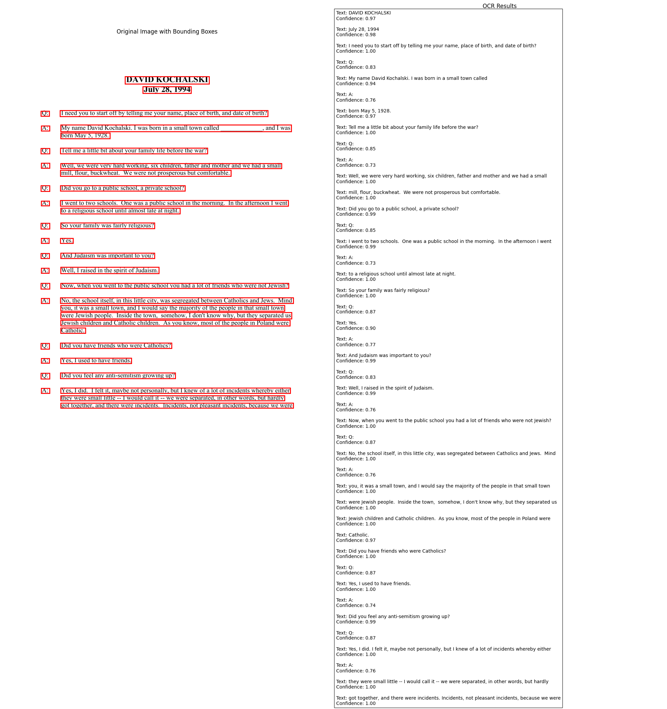
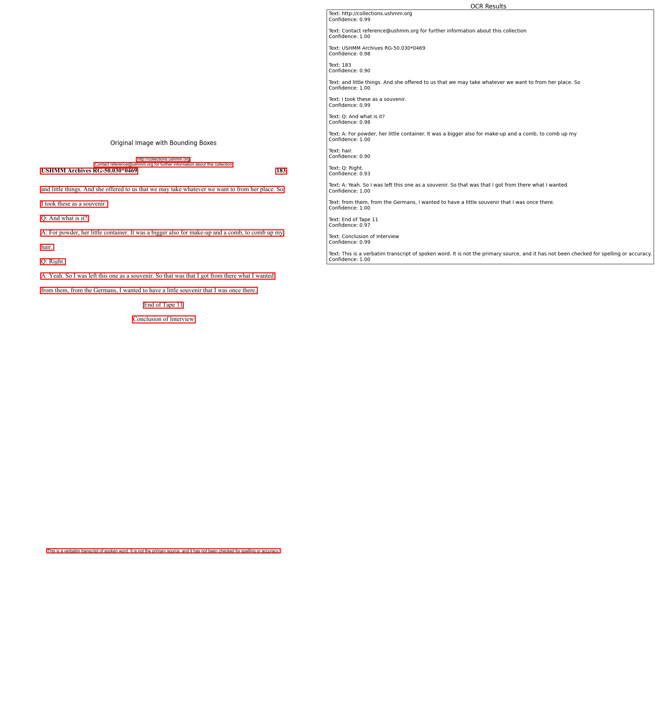

from PIL import Image
from pdf2image import convert_from_path
from surya.ocr import run_ocr
from surya.model.detection.model import load_model as load_det_model, load_processor as load_det_processor
from surya.model.recognition.model import load_model as load_rec_model
from surya.model.recognition.processor import load_processor as load_rec_processor
from tqdm import tqdm
from huggingface_hub import hf_hub_download, list_repo_files
from datasets import load_dataset
import re
import os
/Applications/anaconda3/envs/ocr/lib/python3.12/site-packages/tqdm/auto.py:21: TqdmWarning: IProgress not found. Please update jupyter and ipywidgets. See https://ipywidgets.readthedocs.io/en/stable/user_install.html
from .autonotebook import tqdm as notebook_tqdm
rgs_dataset = load_dataset("placingholocaust/testimony-metadata")["train"]["RG Number"]
rgs = [re.sub(r'[^\w.-]', '', rg) for rg in rgs_dataset]
rgs[:5]
['RG-50.549.02.0033',
'RG-50.549.02.0072',
'RG-50.549.02.0035',
'RG-50.471.0015',
'RG-50.030.0585']
repo_id = "placingholocaust/ushmm-pdfs"
pdfs = list_repo_files(repo_id, repo_type="dataset")
filtered_pdfs = [pdf for pdf in pdfs if any(rg in pdf for rg in rgs) and "trs" in pdf]
filtered_pdfs[:5]
['pdfs/RG-50.030.0001_trs_en.pdf',
'pdfs/RG-50.030.0002_trs_en.pdf',
'pdfs/RG-50.030.0003_trs_en.pdf',
'pdfs/RG-50.030.0004_trs_en.pdf',
'pdfs/RG-50.030.0006_trs_en.pdf']
det_processor, det_model = load_det_processor(), load_det_model()
rec_model, rec_processor = load_rec_model(), load_rec_processor()
langs = ["en"]
Loaded detection model vikp/surya_det3 on device mps with dtype torch.float16
Loaded recognition model vikp/surya_rec2 on device mps with dtype torch.float16
import json
def save_predictions_to_json(all_predictions, filename):
# Convert predictions to serializable format
serializable_predictions = []
for i, page_pred in enumerate(all_predictions):
page_data = []
for text_line in page_pred[0].text_lines:
line_data = {
'text': text_line.text.strip(),
'confidence': float(text_line.confidence),
'bbox': text_line.bbox.tolist() if hasattr(text_line.bbox, 'tolist') else text_line.bbox,
'page': i + 1 # Add page number (1-based indexing)
}
page_data.append(line_data)
serializable_predictions.append(page_data)
# Save to JSON file
with open(filename, 'w', encoding='utf-8') as f:
json.dump(serializable_predictions, f, ensure_ascii=False, indent=2)
from copy import deepcopy
from typing import List
from PIL import Image
from surya.detection import batch_text_detection
from surya.input.processing import slice_polys_from_image, slice_bboxes_from_image, convert_if_not_rgb
from surya.postprocessing.text import sort_text_lines
from surya.recognition import batch_recognition
from surya.schema import TextLine, OCRResult
def sort_text_lines(lines, tolerance=None):
# First sort by y-coordinate
sorted_lines = sorted(lines, key=lambda x: x.bbox[1])
# Initialize merged lines list
merged_lines = []
i = 0
while i < len(sorted_lines):
current_line = sorted_lines[i]
current_text = current_line.text.strip()
# Check if this is a Q: or A: line
if current_text in ['Q:', 'A:'] and i + 1 < len(sorted_lines):
next_line = sorted_lines[i + 1]
y_diff = abs(next_line.bbox[1] - current_line.bbox[1])
# If the next line is close enough vertically, merge them
if y_diff < (tolerance or 20): # Default tolerance of 20 pixels
# Create new merged TextLine
merged_text = f"{current_text} {next_line.text.strip()}"
merged_confidence = (current_line.confidence + next_line.confidence) / 2
# Use the bounding box that encompasses both lines
merged_bbox = [
min(current_line.bbox[0], next_line.bbox[0]), # x1
min(current_line.bbox[1], next_line.bbox[1]), # y1
max(current_line.bbox[2], next_line.bbox[2]), # x2
max(current_line.bbox[3], next_line.bbox[3]) # y2
]
# Create merged polygon (use original polygon if needed)
merged_polygon = current_line.polygon
merged_line = TextLine(
text=merged_text,
polygon=merged_polygon,
bbox=merged_bbox,
confidence=merged_confidence
)
merged_lines.append(merged_line)
i += 2 # Skip the next line since we merged it
continue
merged_lines.append(current_line)
i += 1
return merged_lines
def run_ocr2(images: List[Image.Image], langs: List[List[str] | None], det_model, det_processor, rec_model, rec_processor, batch_size=None, highres_images: List[Image.Image] | None = None, tolerance: int = None) -> List[OCRResult]:
images = convert_if_not_rgb(images)
highres_images = convert_if_not_rgb(highres_images) if highres_images is not None else [None] * len(images)
det_predictions = batch_text_detection(images, det_model, det_processor)
all_slices = []
slice_map = []
all_langs = []
for idx, (det_pred, image, highres_image, lang) in enumerate(zip(det_predictions, images, highres_images, langs)):
polygons = [p.polygon for p in det_pred.bboxes]
if highres_image:
width_scaler = highres_image.size[0] / image.size[0]
height_scaler = highres_image.size[1] / image.size[1]
scaled_polygons = [[[int(p[0] * width_scaler), int(p[1] * height_scaler)] for p in polygon] for polygon in polygons]
slices = slice_polys_from_image(highres_image, scaled_polygons)
else:
slices = slice_polys_from_image(image, polygons)
slice_map.append(len(slices))
all_langs.extend([lang] * len(slices))
all_slices.extend(slices)
rec_predictions, confidence_scores = batch_recognition(all_slices, all_langs, rec_model, rec_processor, batch_size=batch_size)
predictions_by_image = []
slice_start = 0
for idx, (image, det_pred, lang) in enumerate(zip(images, det_predictions, langs)):
slice_end = slice_start + slice_map[idx]
image_lines = rec_predictions[slice_start:slice_end]
line_confidences = confidence_scores[slice_start:slice_end]
slice_start = slice_end
assert len(image_lines) == len(det_pred.bboxes)
lines = []
for text_line, confidence, bbox in zip(image_lines, line_confidences, det_pred.bboxes):
lines.append(TextLine(
text=text_line,
polygon=bbox.polygon,
bbox=bbox.bbox,
confidence=confidence
))
# Pass tolerance to sort_text_lines if provided
lines = sort_text_lines(lines, tolerance=tolerance) if tolerance is not None else sort_text_lines(lines)
predictions_by_image.append(OCRResult(
text_lines=lines,
languages=lang,
image_bbox=det_pred.image_bbox
))
return predictions_by_image
for filtered_pdf in tqdm(filtered_pdfs[:1]):
hf_hub_download(repo_id="placingholocaust/ushmm-pdfs",
filename=filtered_pdf,
local_dir="../demo_output",
repo_type="dataset")
images = convert_from_path(os.path.join("../demo_output", filtered_pdf))
all_predictions = []
for image in images[2:3]:
predictions = run_ocr2([image], [langs], det_model, det_processor, rec_model, rec_processor, tolerance=.05)
all_predictions.append(predictions)
save_predictions_to_json(all_predictions, f"../demo_output/{filtered_pdf.replace('.pdf', '.json')}")
Detecting bboxes: 100%|██████████| 1/1 [00:00<00:00, 2.15it/s]
Recognizing Text: 100%|██████████| 1/1 [00:08<00:00, 8.45s/it]
100%|██████████| 1/1 [00:09<00:00, 9.66s/it]
import matplotlib.pyplot as plt
from PIL import Image, ImageDraw
from matplotlib.patches import Rectangle
def visualize_ocr_results_with_text_column(image, ocr_result):
# Open and process the image
# image = Image.open(image_path)
fig, (ax1, ax2) = plt.subplots(1, 2, figsize=(20, 20))
# Display image with bounding boxes
ax1.imshow(image)
ax1.set_title("Original Image with Bounding Boxes")
ax1.axis('off')
# Draw bounding boxes
for text_line in ocr_result.text_lines:
bbox = text_line.bbox
rect = Rectangle((bbox[0], bbox[1]), bbox[2]-bbox[0], bbox[3]-bbox[1],
fill=False, edgecolor='red', linewidth=2)
ax1.add_patch(rect)
# Display OCR results as text
ax2.axis('off')
ax2.set_title("OCR Results")
# Check if the language is Hebrew
is_hebrew = 'he' in ocr_result.languages
text_content = "\n\n".join([
f"Text: {line.text[::-1] if is_hebrew else line.text}\nConfidence: {line.confidence:.2f}"
for line in ocr_result.text_lines
])
ax2.text(0, 1, text_content, fontsize=10, verticalalignment='top',
wrap=True, bbox=dict(facecolor='white', alpha=0.8))
plt.tight_layout()
plt.show()
# Assuming 'predictions[0]' contains your OCR result
visualize_ocr_results_with_text_column(image, predictions[0])

import json
# Convert predictions to serializable format
serializable_predictions = []
for i, page_pred in enumerate(all_predictions):
page_data = []
for text_line in page_pred[0].text_lines:
line_data = {
'text': text_line.text.strip(),
'confidence': float(text_line.confidence),
'bbox': text_line.bbox.tolist() if hasattr(text_line.bbox, 'tolist') else text_line.bbox,
'page': i + 1 # Add page number (1-based indexing)
}
page_data.append(line_data)
serializable_predictions.append(page_data)
# Save to JSON file
with open('../demo_output/ocr_predictions.json', 'w', encoding='utf-8') as f:
json.dump(serializable_predictions, f, ensure_ascii=False, indent=2)
page_predictions = []
for predictions in all_predictions:
page_lines = []
# Print all text lines from the OCR results
for text_line in predictions[0].text_lines:
page_lines.append(text_line.text.strip())
page_predictions.append(page_lines)
from collections import Counter
# Flatten all page predictions into a single list of lines
all_lines = [line for page in page_predictions for line in page]
# Count occurrences of each line
line_counts = Counter(all_lines)
# Get the 10 most common lines and their counts
most_common_lines = line_counts.most_common(10)
print("Most common lines in the document:")
print("-" * 50)
for line, count in most_common_lines:
print(f"Count: {count:3d} | {line}")
Most common lines in the document:
--------------------------------------------------
Count: 185 | http://collections.ushmm.org
Count: 185 | Contact reference@ushmm.org for further information about this collection
Count: 185 | This is a verbatim transcript of spoken word. It is not the primary source, and it has not been checked for spelling or accuracy.
Count: 182 | USHMM Archives RG-50.030*0469
Count: 91 | Q: Right.
Count: 51 | A: Yes.
Count: 41 | A: Yeah.
Count: 39 | Q: Yes.
Count: 34 | Q: Uh-huh.
Count: 34 | Q: Yeah.
import matplotlib.pyplot as plt
from PIL import Image, ImageDraw
from matplotlib.patches import Rectangle
def visualize_ocr_results_with_text_column(image, ocr_result):
# Open and process the image
# image = Image.open(image_path)
fig, (ax1, ax2) = plt.subplots(1, 2, figsize=(20, 20))
# Display image with bounding boxes
ax1.imshow(image)
ax1.set_title("Original Image with Bounding Boxes")
ax1.axis('off')
# Draw bounding boxes
for text_line in ocr_result.text_lines:
bbox = text_line.bbox
rect = Rectangle((bbox[0], bbox[1]), bbox[2]-bbox[0], bbox[3]-bbox[1],
fill=False, edgecolor='red', linewidth=2)
ax1.add_patch(rect)
# Display OCR results as text
ax2.axis('off')
ax2.set_title("OCR Results")
# Check if the language is Hebrew
is_hebrew = 'he' in ocr_result.languages
text_content = "\n\n".join([
f"Text: {line.text[::-1] if is_hebrew else line.text}\nConfidence: {line.confidence:.2f}"
for line in ocr_result.text_lines
])
ax2.text(0, 1, text_content, fontsize=10, verticalalignment='top',
wrap=True, bbox=dict(facecolor='white', alpha=0.8))
plt.tight_layout()
plt.show()
# Assuming 'predictions[0]' contains your OCR result
visualize_ocr_results_with_text_column(image, predictions[0])
